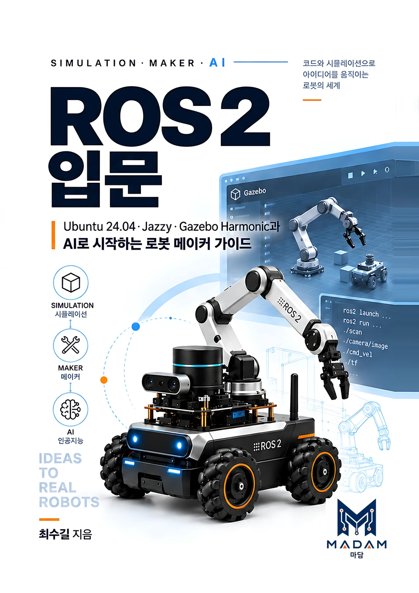

NEW
🧭
AI 컨설팅
기업의 업무와 역량을 진단하고 AI 도입 로드맵, PBL 훈련과정, 맞춤형 교육과 실행 프로젝트를 설계합니다.
AI 훈련 코치 자격 · AI 강의 경력
Service
What We Do
기업의 업무와 역량을 진단하고 AI 도입 로드맵, PBL 훈련과정, 맞춤형 교육과 실행 프로젝트를 설계합니다.
C/C++, Python, 네트워크, 머신러닝·딥러닝, 생성형 AI, DX·AI 리터러시까지 대학·기업·공공기관 맞춤형 교육을 운영합니다.
DX·AX 실증 전문가 과정 교육 내용 보기 ↗ROS1/ROS2, TurtleBot3, LIMO, Arduino, ESP32, Raspberry Pi/Pico 기반의 실습·프로젝트 교육과 기자재 활용을 지원합니다.
교육용 프로젝트 부자재, 실습 환경 구축, 응용 소프트웨어 개발·공급을 통해 수업 현장에 필요한 기술 기반을 제공합니다.
수업용 PPT·코드 예제·프로젝트 가이드부터 일반·교과·학습 서적, 온라인 콘텐츠까지 반복 활용 가능한 교육 자산으로 제작합니다.
출간 도서 『ROS2 입문』 보기Core Expertise
강의, 커리큘럼, 실습환경, 프로젝트 운영을 하나의 교육 경험으로 설계합니다.
C · C++ · Python · C# · Linux · Network
ML · DL · OpenCV · YOLO · Diffusion
ROS2 · TurtleBot3 · LIMO · Gazebo · Isaac Sim
Atmega128 · Arduino · ESP8266/32 · Raspberry Pi
ChatGPT · Stable Diffusion · Sora · Vrew
Docker · WSL2 · GitHub · 표준 실습환경

Book & Publishing 종이책 · 전자책 출간
AI로 시작하는
로봇 메이커 가이드
처음 만나는 Ubuntu부터 직접 움직이는 로봇까지. Python으로 Node와 통신을 익히고, TF·로봇 모델링을 거쳐 Gazebo 시뮬레이션까지 이어지는 27장의 실습형 입문서입니다.